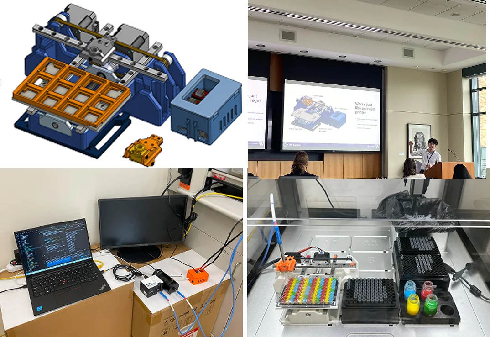

Figure: Kamome with an Ocean Optics probe (back left) and MaraCam (front left) in the Opentrons workspace
Video: scanning a custom printed 12-well plate
Figure: mechanisms within the gantry
Figure: electronics case
Figure: photoluminescent peak intensity vs chlorine and bromine concentration. Credit: Zuyang Ye
Figures: intensity decay rate vs anneal time and measurement location
Figure: phase 1 of prototyping, Nov. 2024
Mara pipetting GIF
MaraCam
Scrapped concepts: Thorlabs mount, adjustable arm, overhead wired gantry
Mara platform